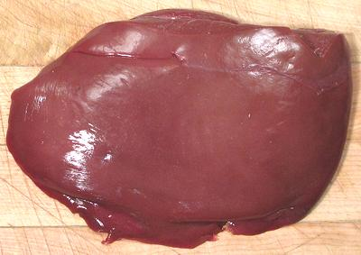

Lamb Liver

[Kaleja (Hindi)]
This liver cooks like and tastes like pork liver - or, actually,
practically any liver.
The photo specimen was 4-1/4 x 3 x 2 inches and wighed 10-3/4 ounces.
More on Lamb Innnards.
as_liverz 091011 - www.clovegarden.com
©Andrew Grygus - agryg@clovegarden.com - Photos
on this page not otherwise credited © cg1
- Linking to and non-commercial use of this page permitted